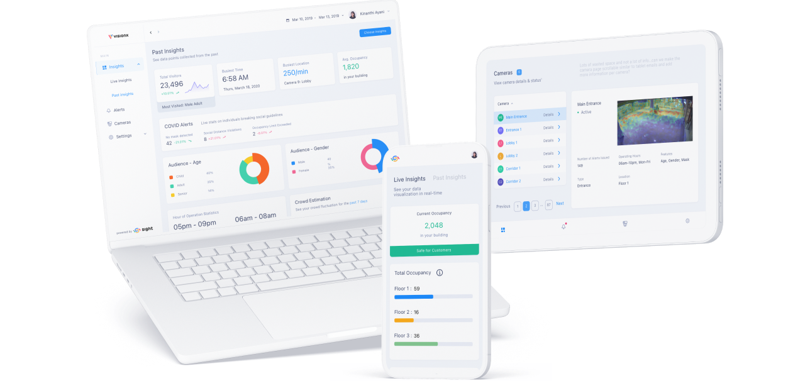
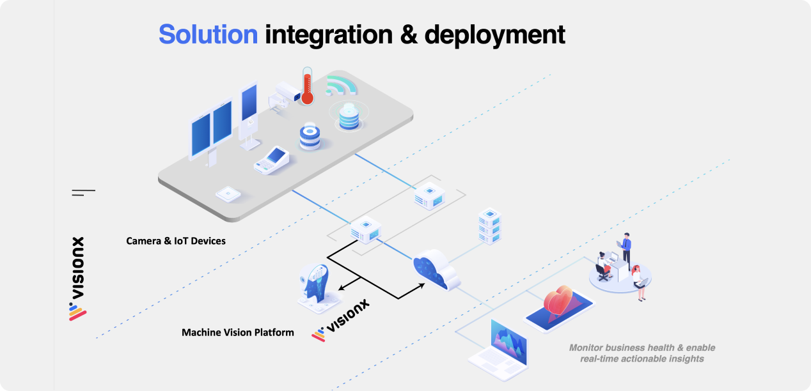
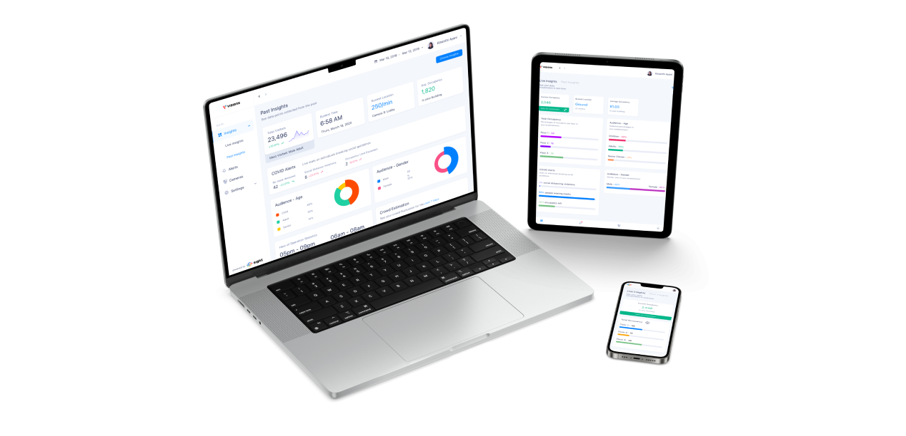
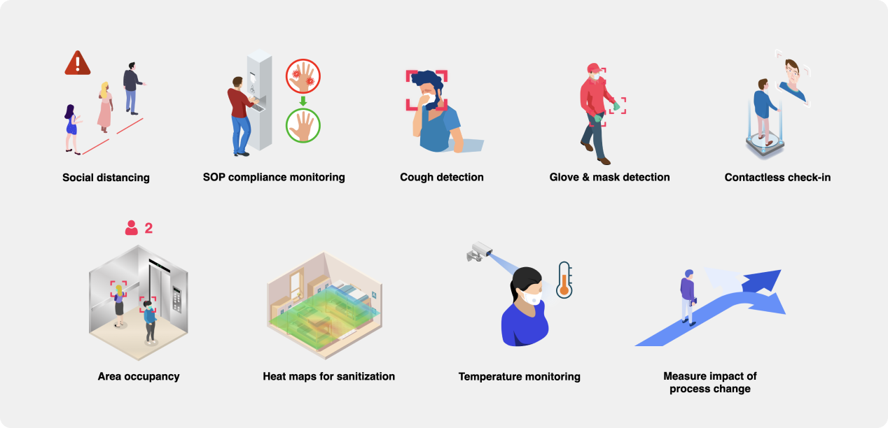

Sight - Giving Fortune 500 Companies a Visual Boost
Bridging user needs, blending collaboration, crafting visually stunning AI-driven solutions for Fortune 500 visionaries.
My Role
Senior UI/UX Designer
What I did
Lead a project to give companies a look into how their customers are engaging in the physical space.
Deliverables
- Concept
- UX Design
- UI Design
- Prototyping
Created with
VisionX
WeWork
WeWork
TL;DR
Overview
Sight, an AI-powered machine vision solution, was developed to provide actionable insights for Fortune 500 companies. The product was designed to automate the detection of multiple objects in video streams for better business decisions, with a focus on compatibility with various cameras and environments.
User research was conducted to understand the needs of potential customers, leading to the creation of tailored pitch decks and offerings for each client. Collaboration was key in developing a tech stack and crafting a consolidated Minimum Viable Product (MVP) offering.
The visual design of Sight was modern and minimalist, with a focus on accessibility and privacy compliance. As the COVID-19 pandemic hit, the team adapted Sight's use cases to ensure buildings followed safety guidelines and detected regulation violations.
The success of Sight highlighted the importance of user research, privacy considerations, collaboration, and user-friendly design. The team plans to continue refining and expanding Sight's capabilities to ensure its ongoing value for businesses worldwide.
User research was conducted to understand the needs of potential customers, leading to the creation of tailored pitch decks and offerings for each client. Collaboration was key in developing a tech stack and crafting a consolidated Minimum Viable Product (MVP) offering.
The visual design of Sight was modern and minimalist, with a focus on accessibility and privacy compliance. As the COVID-19 pandemic hit, the team adapted Sight's use cases to ensure buildings followed safety guidelines and detected regulation violations.
The success of Sight highlighted the importance of user research, privacy considerations, collaboration, and user-friendly design. The team plans to continue refining and expanding Sight's capabilities to ensure its ongoing value for businesses worldwide.
Results
Summary
- Sight was put to the test in a pilot study with McDonald's, where it helped reduce errors, increase order size, and decrease service time, leading to a significant revenue boost for the franchise.
- Sight was adopted into all WeWork offices globally as an enhancement to PackageX.
Introduction and Problem Identification
Picture this: Fortune 500 companies needed a way to supercharge their cameras with AI-powered machine vision to provide actionable insights. Enter Sight - the ultimate solution that delivered camera-powered intelligence, automation, monitoring, and alerts, making cameras smarter than the human eye. This case study will take you on a journey of how our team of 175 developers, product managers, C-Suite, and designers came together to make Sight a reality.
Sight's Potential Market
Our internal research suggested that the Video Analytics Global Market Share was valued at $2,488.5M and was set to reach $11,965.6M by 2026. With smart cities fueling market growth, we knew we had to step up our game. Competitors like ShopperTrak, Sighthound, and DeepNorth were already ahead, so we had to ensure we were offering competitive features to attract the same target market of QSRs, malls, and retail managers.
Identifying the Problem
Our mission was clear: Sight had to automate the detection of multiple objects in video streams to gather insights on behavior and recognition for better business decisions. However, we needed to make sure the design met the needs of our users - leadership teams - while our development team guaranteed compatibility with various cameras and environments. The challenge was on!
User Research: Listening to the Users
We joined pitch calls with our CEO and leadership team to understand the needs of potential customers. As a result, we crafted different pitch decks and offerings for each client. Universities focused on campus applications, while restaurants like McDonald's emphasized seamless customer experiences and smart site operations.
Creating Sight: A Team Effort
Collaboration was key! With our global team, we developed a tech stack using existing security cameras and focused on computer vision pattern recognition and real-world mobility. As we spoke to companies like McDonald's, Emaar, Americana, and Columbia University, we began crafting a consolidated MVP offering. We also held internal feedback sessions to fine-tune details such as filters and user settings.

Putting Sight to the Test
We partnered with McDonald's for a pilot study, designing an easy-to-use dashboard for their mobile drive-up and pickup parking locations. The results? Sight helped reduce errors by 1%, increased order size, and decreased service time by 5 seconds, leading to a franchise revenue boost of over $20,000 in just one month!
Visual Design: Easy on the Eyes
We knew Sight had to look good, so we went for a modern, minimalist design with a blue and white color scheme. We created an internal design system for consistency and made sure everything was accessible to all users. We also addressed privacy concerns by ensuring GDPR and CCPA compliance and developed a patent for Methods and Systems for Classifying Human Attributes using low-quality images without facial recognition.

Adapting to COVID-19
As the pandemic hit, we found new opportunities to pivot Sight's use cases. From ensuring buildings followed OSHA and CDC guidelines to detecting safety regulation violations, we adapted Sight to provide timely insights in a world of changing rules and regulations.

Lessons Learned and Next Steps
Sight was a success, providing AI-powered machine vision to Fortune 500 companies. We learned the importance of user research, privacy concerns, and collaboration. We also discovered that a visually appealing, user-friendly design was vital to our product's success. So, what's next? With Sight's foundation in place, we can continue to refine and expand its capabilities, ensuring that it remains a valuable tool for businesses worldwide. Onwards and upwards!